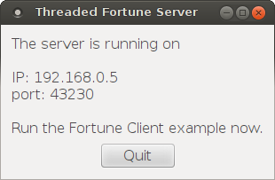

Threaded Fortune Server Example

The implementation of this example is similar to that of the Fortune Server example, but here we will implement a subclass of QTcpServer that starts each connection in a different thread.
For this we need two classes: FortuneServer, a QTcpServer subclass, and FortuneThread, which inherits QThread.
class FortuneServer : public QTcpServer { Q_OBJECT public: FortuneServer(QObject *parent = 0); protected: void incomingConnection(qintptr socketDescriptor) Q_DECL_OVERRIDE; private: QStringList fortunes; };
FortuneServer inherits QTcpServer and reimplements QTcpServer::incomingConnection(). We also use it for storing the list of random fortunes.
FortuneServer::FortuneServer(QObject *parent) : QTcpServer(parent) { fortunes << tr("You've been leading a dog's life. Stay off the furniture.") << tr("You've got to think about tomorrow.") << tr("You will be surprised by a loud noise.") << tr("You will feel hungry again in another hour.") << tr("You might have mail.") << tr("You cannot kill time without injuring eternity.") << tr("Computers are not intelligent. They only think they are."); }
We use FortuneServer's constructor to simply generate the list of fortunes.
void FortuneServer::incomingConnection(qintptr socketDescriptor) { QString fortune = fortunes.at(qrand() % fortunes.size()); FortuneThread *thread = new FortuneThread(socketDescriptor, fortune, this); connect(thread, SIGNAL(finished()), thread, SLOT(deleteLater())); thread->start(); }
Our implementation of QTcpServer::incomingConnection() creates a FortuneThread object, passing the incoming socket descriptor and a random fortune to FortuneThread's constructor. By connecting FortuneThread's finished() signal to QObject::deleteLater(), we ensure that the thread gets deleted once it has finished. We can then call QThread::start(), which starts the thread.
class FortuneThread : public QThread { Q_OBJECT public: FortuneThread(int socketDescriptor, const QString &fortune, QObject *parent); void run() Q_DECL_OVERRIDE; signals: void error(QTcpSocket::SocketError socketError); private: int socketDescriptor; QString text; };
Moving on to the FortuneThread class, this is a QThread subclass whose job is to write the fortune to the connected socket. The class reimplements QThread::run(), and it has a signal for reporting errors.
FortuneThread::FortuneThread(int socketDescriptor, const QString &fortune, QObject *parent) : QThread(parent), socketDescriptor(socketDescriptor), text(fortune) { }
FortuneThread's constructor simply stores the socket descriptor and fortune text, so that they are available for run() later on.
void FortuneThread::run() { QTcpSocket tcpSocket;
The first thing our run() function does is to create a QTcpSocket object on the stack. What's worth noticing is that we are creating this object inside the thread, which automatically associates the socket to the thread's event loop. This ensures that Qt will not try to deliver events to our socket from the main thread while we are accessing it from FortuneThread::run().
if (!tcpSocket.setSocketDescriptor(socketDescriptor)) {
emit error(tcpSocket.error());
return;
}
The socket is initialized by calling QTcpSocket::setSocketDescriptor(), passing our socket descriptor as an argument. We expect this to succeed, but just to be sure, (although unlikely, the system may run out of resources,) we catch the return value and report any error.
QByteArray block;
QDataStream out(&block, QIODevice::WriteOnly);
out.setVersion(QDataStream::Qt_4_0);
out << (quint16)0;
out << text;
out.device()->seek(0);
out << (quint16)(block.size() - sizeof(quint16));
As with the Fortune Server example, we encode the fortune into a QByteArray using QDataStream.
tcpSocket.write(block);
tcpSocket.disconnectFromHost();
tcpSocket.waitForDisconnected();
}
But unlike the previous example, we finish off by calling QTcpSocket::waitForDisconnected(), which blocks the calling thread until the socket has disconnected. Because we are running in a separate thread, the GUI will remain responsive.
Files:
See also Fortune Server Example, Fortune Client Example, and Blocking Fortune Client Example.